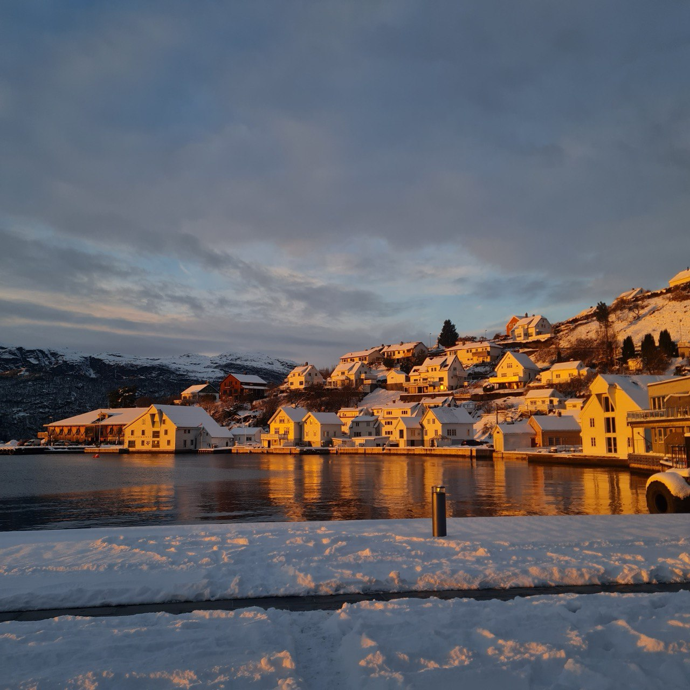

 Sand, Norge - Des 2023
Допомогти українським лікарям та медичному персоналу з підтвердженням освіти в Норвегії. Супутні цілі, це розповісти про вивчення мови та систему в цілому. Якщо ви побачили помилки в моїх статтях, повідомте будь-ласка в телеграм.
Отримав освіту лікаря в Україні. Зараз в процесі її підтвердження в Норвегії. У вільний час, окрім вивчення мови, займаюсь веб - розробкою. Тому як кожний айтішник, маю сайд - проект :)